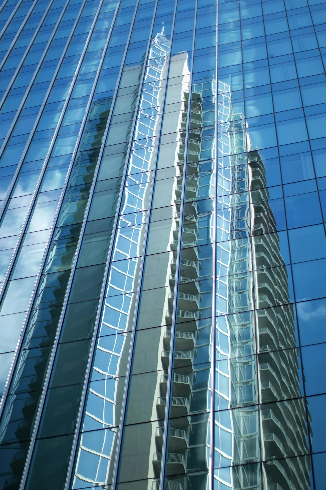
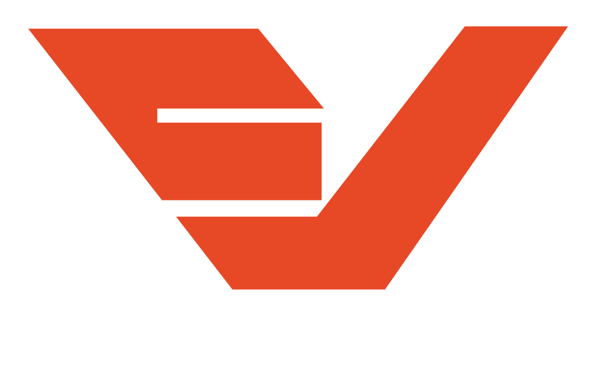
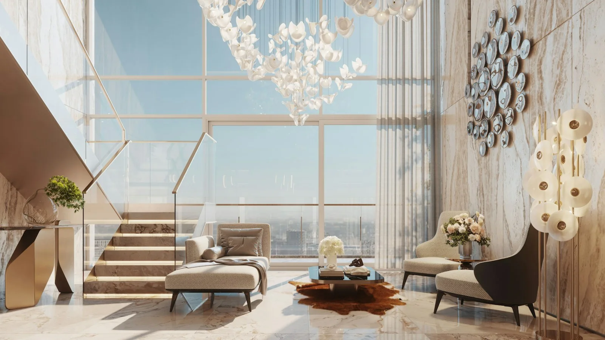

01 — CONSTRUIR
Una visión
a gran escala.
Edificios y arquitectura corporativa.

Hablemos de tu proyectoVIDRIOS VECA · LIMA, PERÚ
Vidrio que conecta arquitectura, luz y vida.
Para grandes edificios y para el lugar que llamas hogar.
01 SOLUCIONES EN VIDRIO
Una solución para cada escala. Desde las ventanas de un edificio hasta ese cambio que transforma tu casa.
Ventanas y soluciones en vidrio para proyectos inmobiliarios, edificios y espacios de trabajo. Una conversación que empieza con tus planos y las necesidades de tu obra.
Conversemos sobre tu obraVentanas y elementos de vidrio que abren tu hogar a la luz. Exploremos juntos una solución que acompañe la distribución y el estilo de tus espacios.
Dale una nueva vista a tu hogarA veces, cambiar una ventana cambia todo. Soluciones en vidrio para renovar ambientes existentes y darle una nueva perspectiva a lo que ya construiste.
Empecemos con ese cambio02 IMAGINA LAS POSIBILIDADES
Un mismo material. Distintas maneras de transformar un espacio.

Edificios y arquitectura corporativa.

Casas, departamentos y remodelaciones.
Imágenes referenciales para ilustrar las posibilidades del vidrio.
03 SOMOS VIDRIOS VECA
Somos una empresa de vidrios en Lima. Trabajamos con proyectos de edificios, viviendas y remodelaciones, entendiendo que cada espacio necesita algo diferente.
Nos interesa conocer lo que quieres construir, cómo imaginas el resultado y qué necesita tu proyecto. A partir de ahí, exploramos las posibilidades contigo.
Hagamos espacio para tu idea04 EL SIGUIENTE PASO
Cuéntanos qué tienes en mente.
Un edificio, tu hogar o un nuevo comienzo.